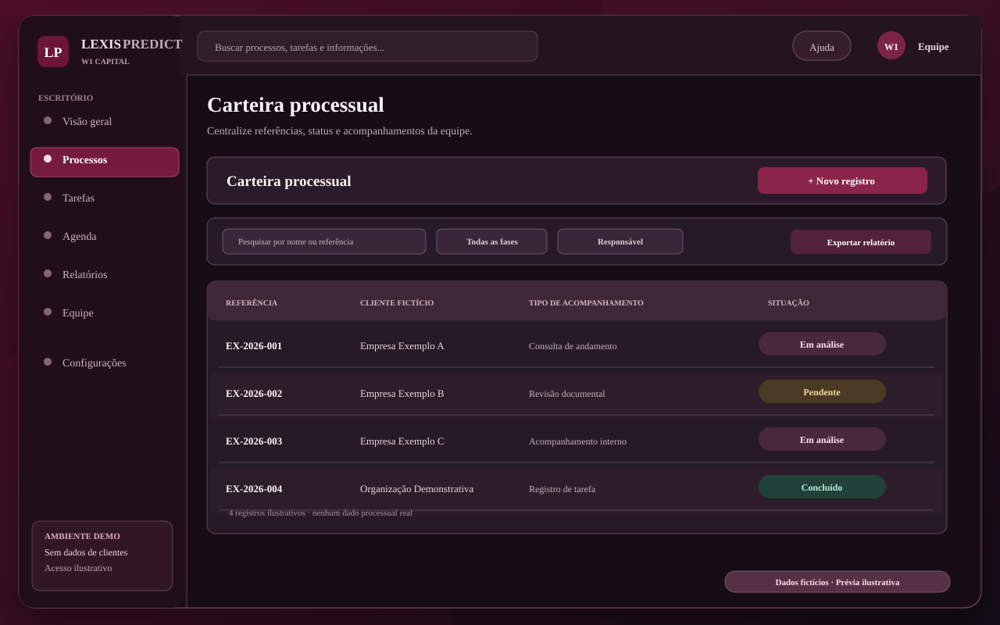

Carteira e registros
Estruturação de listas autorizadas, identificação de responsáveis, classificação interna e registro do último acompanhamento.

Além do software, estamos oferecendo avaliação de um serviço de apoio administrativo para organizar acompanhamentos, responsabilidades, tarefas e preparar retornos claros aos clientes, sempre sob autorização e orientação do escritório.

O escopo exato, o volume atendido, a frequência e as responsabilidades precisam ser definidos com o escritório antes da contratação. A abrangência do acompanhamento depende das fontes permitidas, da capacidade operacional e das condições contratadas.
Estruturação de listas autorizadas, identificação de responsáveis, classificação interna e registro do último acompanhamento.
Consulta administrativa às fontes permitidas pelo escritório, registro de novidades e indicação de itens que exigem análise profissional.
Preparação de mensagens claras sobre informações conferidas, submetidas à validação do escritório antes do envio quando necessário.
Organização de pendências, próximos contatos e responsáveis. Prazos processuais continuam sob conferência e controle do advogado responsável.
Resumos de tarefas abertas e concluídas, últimos acompanhamentos e pendências, com critérios acordados e informações de origem.
O serviço pode ser avaliado separadamente da licença do CRM. A ferramenta utilizada será definida conforme autorização, requisitos técnicos e privacidade.
Escolha um recorte da operação, como os retornos pendentes de uma equipe. O piloto pode ser realizado na ferramenta que o escritório já usa, conforme o acesso autorizado. A contratação do LexisPredict é opcional.
Uma base organizada para o recorte combinado, com responsáveis e último acompanhamento disponível.
Uma lista de pendências administrativas com responsável e data interna, para conferência pelo escritório.
Um resumo do trabalho, das lacunas encontradas e do que a equipe precisa validar. Veja o modelo fictício.
Conversa de 15 minutos para identificar volume aproximado de processos, tipos de demandas e principais dificuldades. Sem compartilhar dados reais.
Formalização de entregas, frequência, canais, supervisão jurídica, autorizações, privacidade, preço e início condicionado à capacidade operacional.
Após contratação e habilitações necessárias, executar rotinas acordadas e apresentar registros conferíveis ao escritório.
Agende uma conversa inicial preferencialmente após as 18h. Você pode avaliar apenas o apoio operacional, apenas o LexisPredict ou ambos.
Sim, a proposta pode ser avaliada separadamente. O serviço efetivo depende da definição do escopo, dos recursos disponíveis e de contrato específico.
Não. O advogado responsável mantém a orientação técnica, a conferência de prazos e os atos privativos de advocacia. A W1 oferece apenas suporte operacional dentro das permissões recebidas.
É possível avaliar apoio na preparação de retornos administrativos e na organização de contatos. O conteúdo, canal, autorização e necessidade de revisão pelo escritório precisam estar estabelecidos antes de qualquer envio.
Podemos conversar sobre conteúdo educativo e possíveis colaborações futuras, sem programa de comissão predefinido. Conheça a proposta de parcerias da W1 Capital.
O preço, a frequência e a data de início são definidos após análise do volume, segurança, equipe e obrigações contratuais. Não há execução automática ao solicitar a conversa.